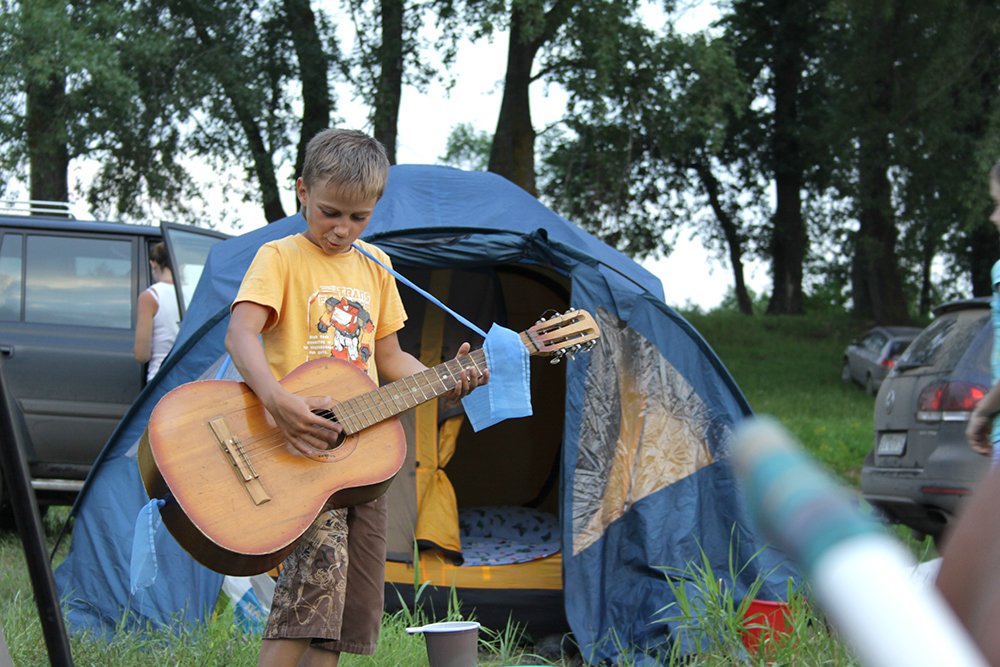
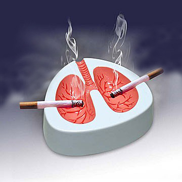

Когда я был молодым, мы с друзьями частенько выбирались на берег Томи или другой лужи. Ну, там палатки, мангалы, комары, матрас за ночь сдулся и налобный фонарик. Сейчас уже обрюзгли и обзавелись дачами да билетами до Черногории. А кого-то вовсе из дома не вытащишь. Но время было.
Так вот в те времена мы были не одни такие молодцы. Берег той же Томи на летний период превращался по выходным в растянутый кемпинг, где спиртное лилось рекой, а в окрестных лесах уже не найти было хвороста. Закон отдыха на природе в общем таков. Если на участке длиной метров 100 будет хотя бы две машины туристов, то вероятность, что из одной из них будет громко играть музыка равна 100%. Репертуар, конечно, нет тот. Всегда не тот репертуар, который нравится именно мне. Но музыка будет играть громко. Допоздна. Громко. Она играла и на на всех берегах Томи, и на Шире и на Инголе, на Белё играла музыка, и на озере в кедровом бору. Музыка прогоняет зверей по ночам от берегов Катуни и Телецкого озера, а Яровое — вовсе сплошная дискотека, в самом Яровом.

Однажды музыки не было. Но для этого мы поехали отдыхать из Сарапок на велосипедах и перешли вброд по Томи до острова.
Я вообще не люблю шум. Ни в одном из его проявлений. Разумеется такая не моя музыка меня всегда раздражала. Я думал «какого чёрта они вообще творят, почему бы просто не отдыхать в тишине, какого лешего их всех не утащат на дно русалки?». Думал, но терпел. Я по натуре думающий, терпеливый и без бицепсов.
А несколько лет назад вот что понял. Какого чёрта вообще моё право слушать тишину должно быть выше права другого гражданина пугать лосей голосом E-Type или другого «два-бриллианта-три-карата»? Одно дело тишина дома по ночам. Другое дело, когда люди специально уезжают в лес, чтобы дать волю низменным чувствам. Может быть после такой ночи двум людям повысят зарплату, три семьи не разведутся, а мозги одного гуся останутся невредимыми?
Удивительно, но у этих людей, которых я, конечно же, не люблю, есть точно такие же права как и у меня.
Похожая драма разыгрывается с 1 июня в ресторанах и прочих барах. Там запретили курить. Кто-то решил, что моё право не дышать никотином важнее права другого человека совать себе в рот всякую гадость. Кто-то в очередной раз это решил за меня.

Я не люблю курящих людей. Привык к друзьям, которые курят, но ворочу нос от девушек, которые стоят у офисных зданий и торговых центров с сигаретами. Но это их жизнь и их право. Курящие люди — часть антуража ресторана, в этом смысле. Если мне будет неприятен антураж, я просто проголосую рублём. Всё, что нужно было, в этом отношении, — разрешить заведениям запрещать курение. И всё. Заведения бы справились сами.
Разумеется, я полностью поддерживаю обезличивание сигарет на прилавках. Всё-таки, это зависимость, и дополнительно стимулировать её потребление бессовестно. Честнее было бы, конечно, начать со спиртного и продавать любую водку в простых стеклянных бутылках без этикеток с надписью ВОДКА, но я переживаю за ВВП, народное хозяйство и действующую власть. Будем продолжать наблюдения.
Не могу понять, кстати, в настоящих реалиях в настоящей России, кому этот запрет выгоден. Всё, что происходит сегодня у нас, кому-то выгодно в финансовом плане, причём в краткосрочной перспективе. Ну хотя бы не в финансовом, хотя бы в политическом.
С запретом на курение совсем непонятно. Это прямые убытки многим, а политические очки — призрачны… В заботу о себе я по-прежнему не верю.